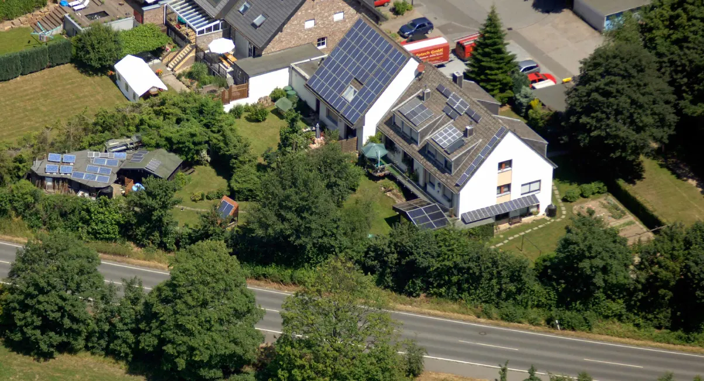
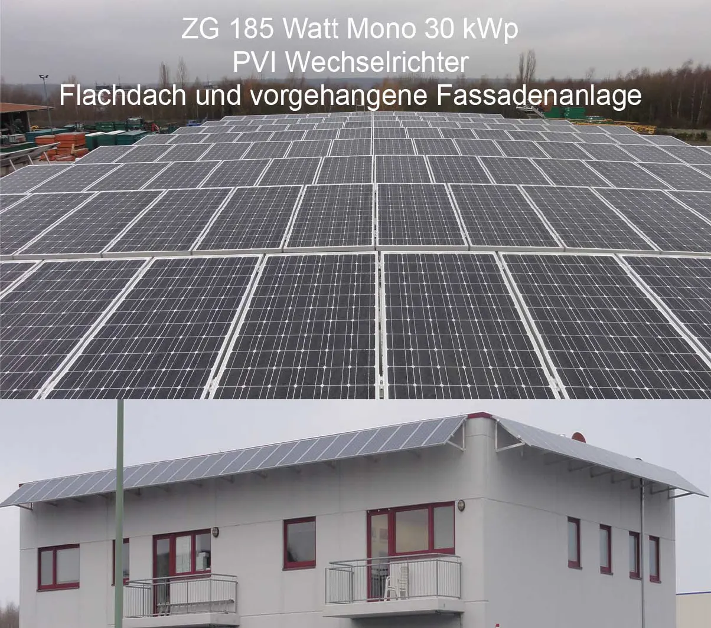
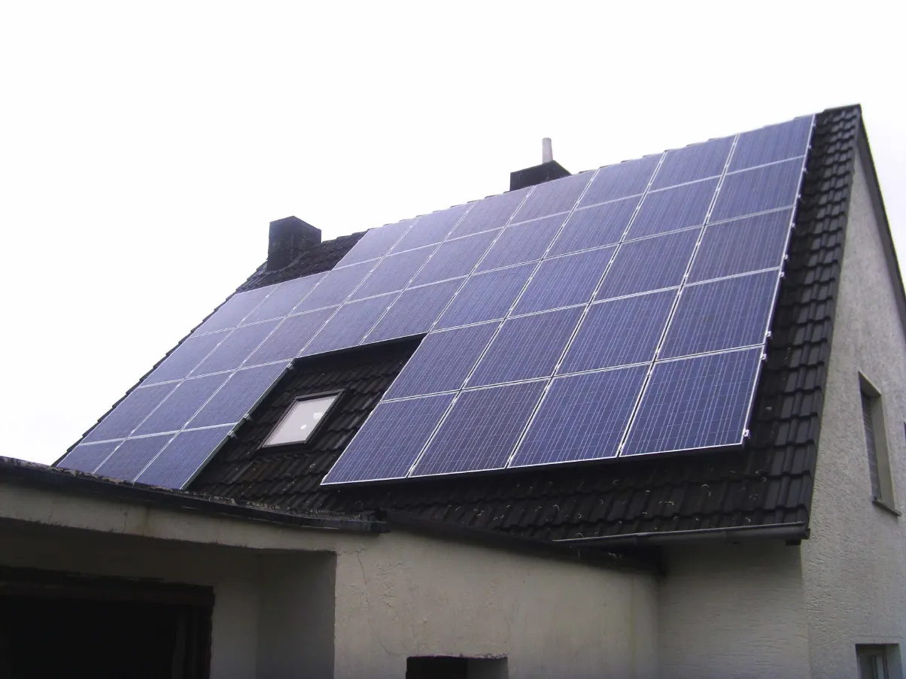
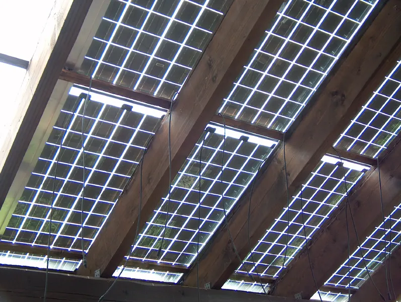
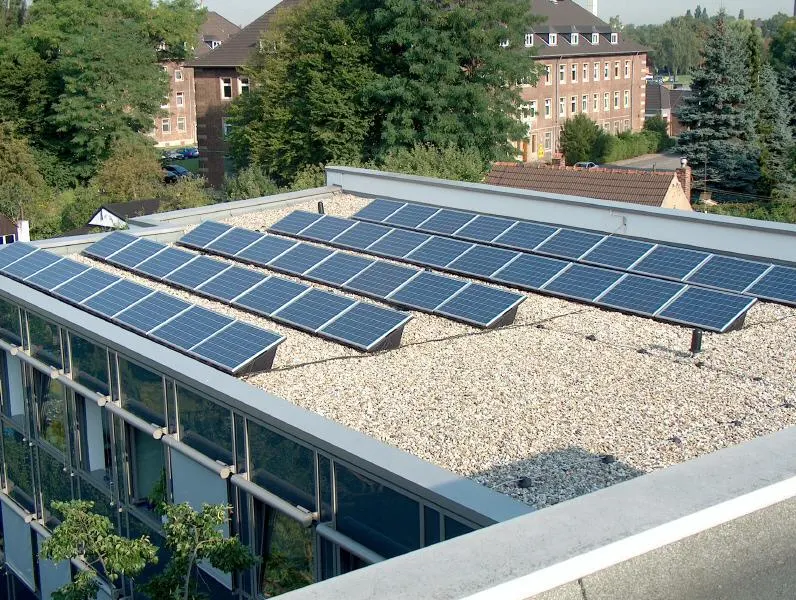
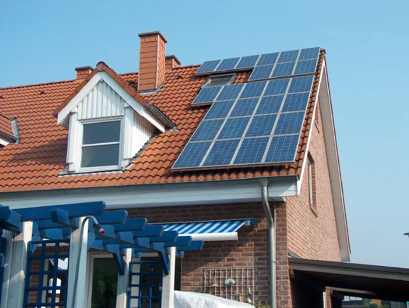
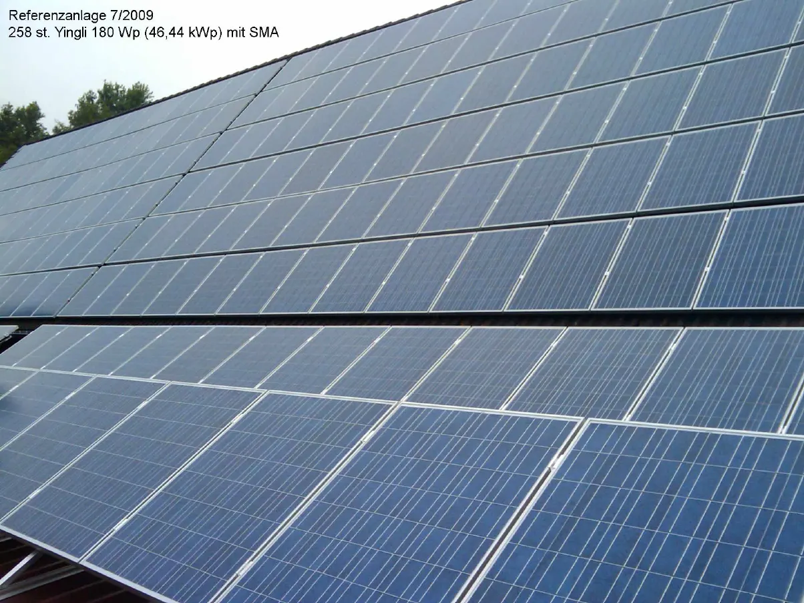

Referenzen
Rund 1.500 Anlagen in 38 Jahren.
Von der 4-kWp-Dachanlage bis zur 46-kWp-Großanlage, von Aachen bis Wuppertal – eine Auswahl unserer Arbeit. Und eine Anlage, die Sie besichtigen können.
Karte
Wo wir gebaut haben.
Punkt anklicken oder Ort wählen. Die vollständige Referenzliste 1988–2023 (PDF) zeigen wir Ihnen gern beim Beratungstermin – zusammen mit der Referenzbildermappe.
Bilder
Sattel, Pult, Flach – und das steile Pfannendach.
Wir montieren auf allen gängigen Dachformen. Bei sehr flachen Ziegeldächern (unter 22°) beraten wir ehrlich: Dort ist das Risiko für Undichtigkeiten nach dem Ausklinken der Ziegel erhöht.






Alle Fotos: Kundenanlagen von SOTECH.

Besichtigungsanlage
Anfassen statt Prospekt.
In Aachen können Sie nach Terminabsprache eine Anlage im Mehrfamilienhaus besichtigen: Batteriesystem (Tesla III bzw. SMA DC-System 5 × 3,28 kWh), Wallboxen und Wärmepumpe im laufenden Betrieb. Am Demodach lassen sich verschiedene Befestigungssysteme vergleichen.
Termin wählen
Ihr Dach könnte das nächste sein.
Kostenlose Beratung vor Ort – oder an der Besichtigungsanlage in Aachen.
Vor-Ort-Beratung
Herr Gier kommt zu Ihnen, schaut sich Dach und Zählerschrank an und berät kostenlos.
Termin anfragenBesichtigungsanlage
Speicher, Wallboxen und Wärmepumpe im Betrieb sehen – Mehrfamilienhaus in Aachen, nach Absprache.
Besichtigung vereinbarenRückruf
Sie nennen uns Zeit und Nummer – wir rufen zurück. Auch außerhalb der Bürozeiten erreichbar.
Rückruf wünschenAngebot anfordern
Eckdaten zu Dach und Verbrauch senden – Sie bekommen ein unverbindliches, kostenloses Angebot.
Angebot anfragenOder direkt anrufen
02402 7097620Mo–Do 8–15 Uhr · Fr 8–14 Uhr
Außerhalb der Geschäftszeiten: 0241 562489 oder 0171 5296741